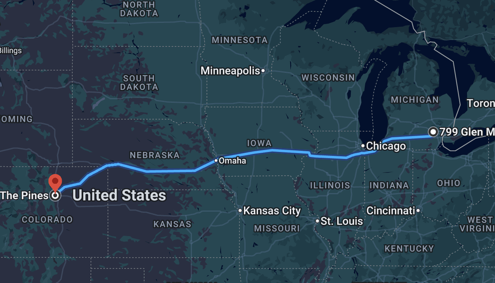

Food
I would classify myself as a foodie. Most of my family works in the restaurant industry and because of that, I have grown up in a house with very good food. According to a list of the 180 best cities in America food-wise, Denver was ranked #11 (Rhodes, 2023). This was based on affordability, diversity, quality, and accessibility (McCann, 2023). Because of my upbringing and the food that I have always been exposed to. Food is an important factor to me. Based on the ranking of #11, Denver should provide a variety of good options.
Economic Growth
Denver is a growing city (Sternfield & Bink, 2023). Most people would agree with growing cities to be a good environment to live in. It means that the economy is generally doing well. It means that there is a lot of opportunity around you. It also means that there is more potential job growth—which is always a good thing.
Professional Opportunities
Another reason that I have selected Denver is that it is ranked for one of the best cities for young professionals (2023 best cities for Young Professionals). This means that there are a lot of people there in the same position that I am in. It also means that there are a lot of job opportunities.
Activity
Denver is very outdoor and fitness oriented (Living in Denver, CO | U.S. News). I am a runner, so that fits well with the emphasis on fitness there. However, it also is important to me because of motivation. There are many studies that demonstrate how much your environment shapes who you are. One even goes on to say that “our environment dictates what we choose to do” (Chu, 2017). Being in an active environment will motivate me to stay active.
Music
Another reason that I have picked Denver is its proximity to Red Rocks, not as a National Park, but as a concert venue. Red Rocks Amphitheater is 15 miles from Denver, there is even a Red Rocks Shuttle (Fall in love with Red Rocks Ampitheatre). Music is very important to me; and therefore, concerts are very important to me. Red Rocks is supposed to be one of the best concert venues in the world. Having that proximity to the amphitheater would be amazing.
Age
The median age of Denver is about 37 years old &lparLiving in Denver, CO | U.S. News). The city's population being on the younger side is a good thing. It speaks to the pace, attitude, and aesthetic of the city. It also speaks to the things to do in Denver.
Wage
The average income of the city of Denver is also higher than the average income in the US (Living in Denver, CO | U.S. News). This speaks to the job market in Denver.
Sun
Denver is ranked #20 of the sunniest US states (Bitler, 2022). It might sometimes be cold but is sunny majority of the time. Sun is always a good thing.
Job Market
The job market in Colorado is healthy with 90,000 open jobs as of last September (Colorado job market 2023). There also several growing industries in Colorado, like Tech, Healthcare, and energy. This all promising for a soon-to-be college graduate in search of a job.
Beaches
Growing up, my family has always found beaches around, whether it's going to the lake in MI, or vacations to clearwater beach. We are all beach people, including me. Believe it or not there are beaches in CO, that are pretty close to Denver(Best public beaches 2019).
Sports
My family has always been very big sports fans. In fact, that's part of the reason that I chose to attend Butler—the basketball team. Unfortunately, I am not a fan of any CO teams, but the Yankees, Rangers, and Ravens all visit Denver as it is home to the Rockies, Avalanche, and Broncos.
Temperature
I have lived in MI and IN for the past 10 years, a large part of the reason that I want to leave the Midwest is the winters. A lot of people would think that the winters wouldn't be any better in CO, but the winters are actually pretty mild. The winters typically see a daily high of 45 degrees, but even then it is typically sunny (Denver colorado weather). The sun would be a nice break from what we see in the Midwest.
Diversity
Denver is a diverse city, with only 30% of the population being white (Department of Pediatrics). Again, one's environment shapes the way that they think. Being in a diverse environment opens your mind to different perspectives—something that is important in every part of life.
Things to Do
There is plenty to do in Denver; they have all major league sports, hiking trails, red rocks ampitheater, beaches, a film festival, and plenty of museums/attractions (Must see attractions in Denver). I have moved around so much in my life and because of that my brain gets bored quickly and I am ready to do something new. Having all of this around will prevent me from getting bored of Denver.
Travel
The last reason for the choice of Denver is the accessibility to travel. The Denver international airport is one of the largest and busiest airports in the country (About Den | denver airport). Not only is this fitting because I like to travel, but it also means that I could easily go back home and visit family.
My Theater of Choice
Pines at 2701 Federal BlvdDenver, CO 80211
